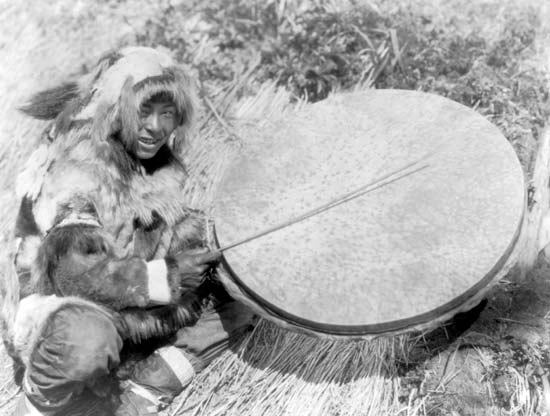

There are many musical styles within North America such as: Cowboy, string bands, honky tonk and western swing. Shows depicting black people in sterotypical situations were also popular for a time, popular songs were included within these particular shows.
One other musical style is ragtime which consists of Scott Joplin songs being played on the piano, some examples of ragtime songs and The Entertainer and The Maple Leaf Rag. Blues is also an integral part of this style of music for the following reasons: it has it's roots in the slave era, guitars and pianos are predominantly used in the creation of blues music and it depics the felling of sadness among the singer. A trill is usually played during blues music, this is when two or more keys on the piano are rapidly pressed in quick succession to imitate the sound of a person crying.
Here are some videos of the two songs that I mentioned earlier:
Native American music also plays a part in the North American musical style. Traditonal instruments such as the powwow drum exist for playing this traditional American music. Much like the Gaelic musical style that has been explained already, Native American music also tells some soft of story within the song that is being sung and performed. In the past (around the 1930's) the instruments used to play Native american music were usually made out of an animals skin a noteable instruments that had this quality was the drum.

Image: Copyright of Edward S. Curtis/Library of Congress All Rights Reserved.
The following informaton is an excerpt from the BBC Bitesize revision source:
African slaves brought their musical traditions with them when they were transported to work in the North American colonies. Early types of African American music included spirituals (religious songs using vocal harmony) and work songs.
Work songs were sung rhythmically in time with the task being done. They used call and response in which phrases from a lead singer were followed by the other singers. African music combined with the folk music of the white European settlers to produce new styles of music.
The blues emerged towards the end of the 19th century. This early style of blues was known as country blues and was usually a solo singer accompanied on guitar or piano sometimes with added harmonica or drums. Well-known country blues musicians include Lead Belly, Blind Lemon Jefferson and Robert Johnson.
History of blues music
Social changes
Until the end of the 19th century, America was largely a rural community. In the early 20th century large numbers of people started to move to industrial cities. After the Civil War and the emancipation of slaves, the blues spread, together with the people who sang and played it. Many former slaves moved from the cotton fields of the southern states to northern cities such as Chicago and Detroit, where the blues became hugely popular.
Different styles of blues emerged, known collectively as city blues or urban blues. During the 1940s and 1950s city blues was very popular in black clubs and bars. Some of these blues styles were jazz influenced and many had amplified bands. Well-known city blues musicians include Elmore James, Howlin’ Wolf, T-Bone Walker and B.B. King.